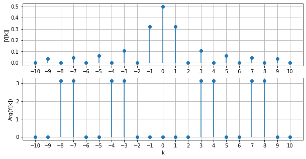
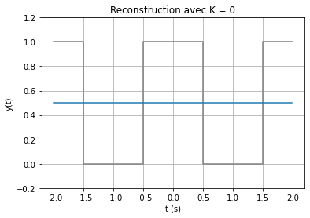
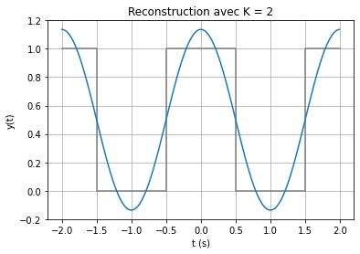
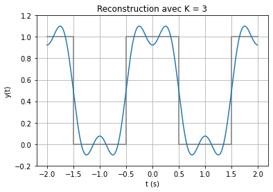
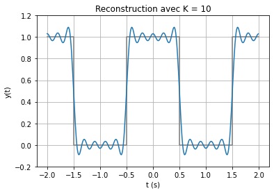
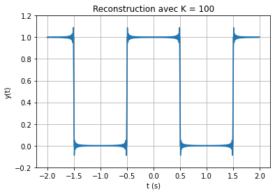

Série de Fourier d’un créneau¶
On considère le signal créneau \(y(t)\) de période \(2T\) défini par :
\[\begin{split}
y(t) =
\begin{cases}
A \quad &\text{si}\ -\frac{T}{2} \leq t \leq \frac{T}{2}, \\
0 \quad &\text{sinon}
\end{cases}
\end{split}\]
avec \(A=1\) et \(T = 1\).
Sa série de Fourier est égale à :
\[
Y[k] = \frac{A}{2} \mathrm{sinc}\left(\frac{k}{2}\right).
\]
Comme elle est à valeurs complexes, sa représentation est séparée en module et argument :

À partir de la série de Fourier, on peut revenir au signal temporel avec la série de Fourier inverse.





On observe que lorsque \(N\) augmente, la reconstruction tend vers le créneau. Cependant, des oscillations apparaissent aux discontinuités du signal et ne peuvent s’annuler, même si \(N\) est très grand : c’est le phénomène de Gibbs. Le phénomène disparaît seulement pour \(N \rightarrow +\infty\)